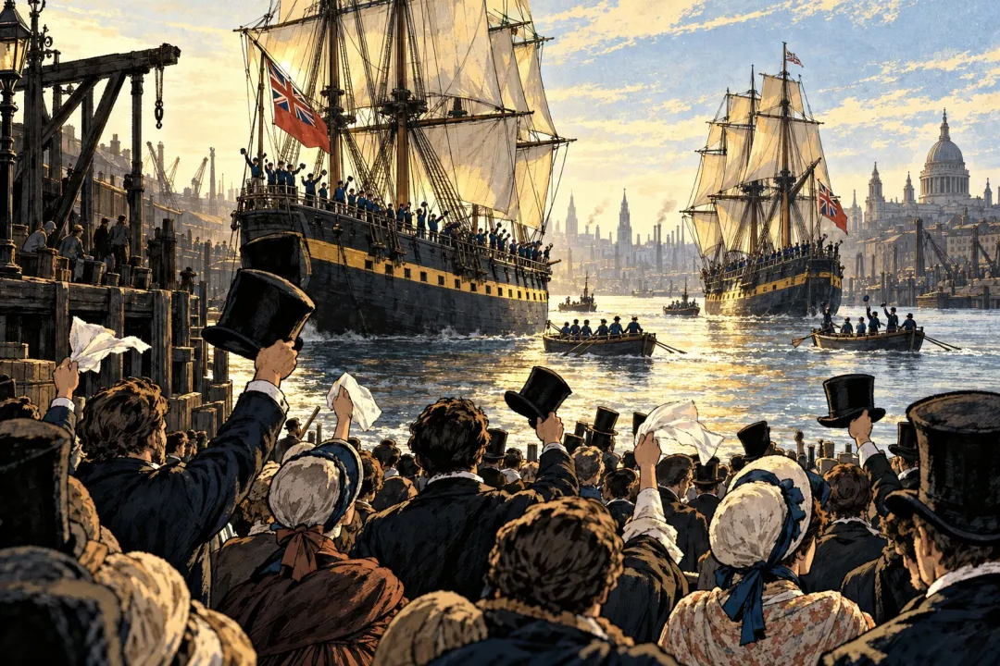

"북극에서 사라진 배 두 척, 169년 뒤 바다 밑에서 멀쩡하게 발견됨"
1845년 5월 19일, 영국 켄트 주 그린하이드 항구.
배 두 척이 떠남. 이름은 에레버스호와 테러호. 목적지는 북극. 대서양에서 태평양으로 넘어가는 북쪽 바닷길, 이른바 북서항로를 찾는 게 임무였음.
대장은 존 프랭클린 경. 북극 탐험 경력이 있는 해군 장교였음.
출항할 때 탄 사람은 134명. 그린란드에서 아픈 선원 5명을 집으로 돌려보내서 129명이 됨.
돌려보내진 그 5명이 이 원정대에서 살아남은 전부임.

좋아요 97
댓글 11
리포스트 2
공유 0